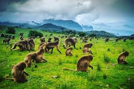
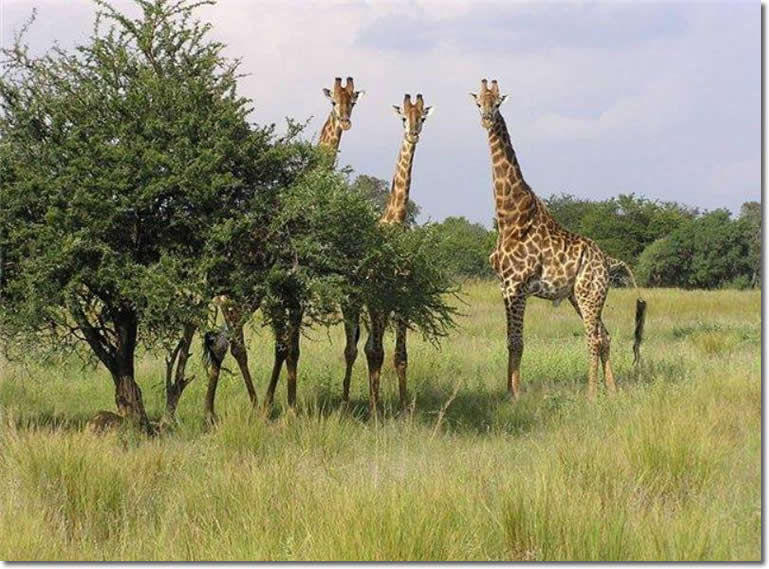
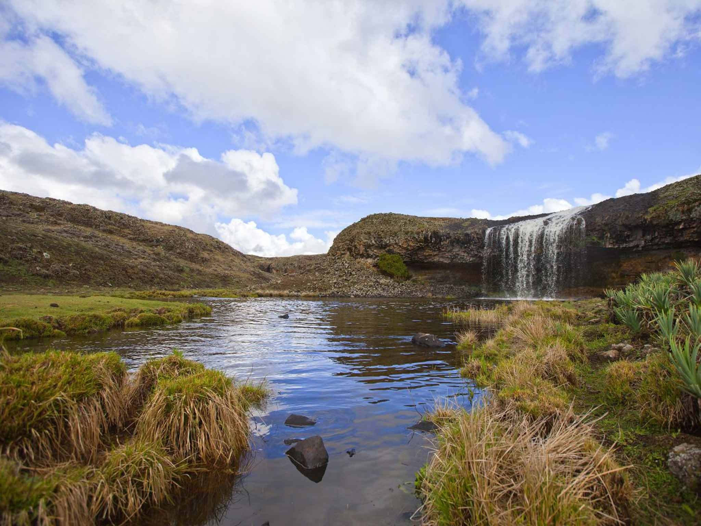
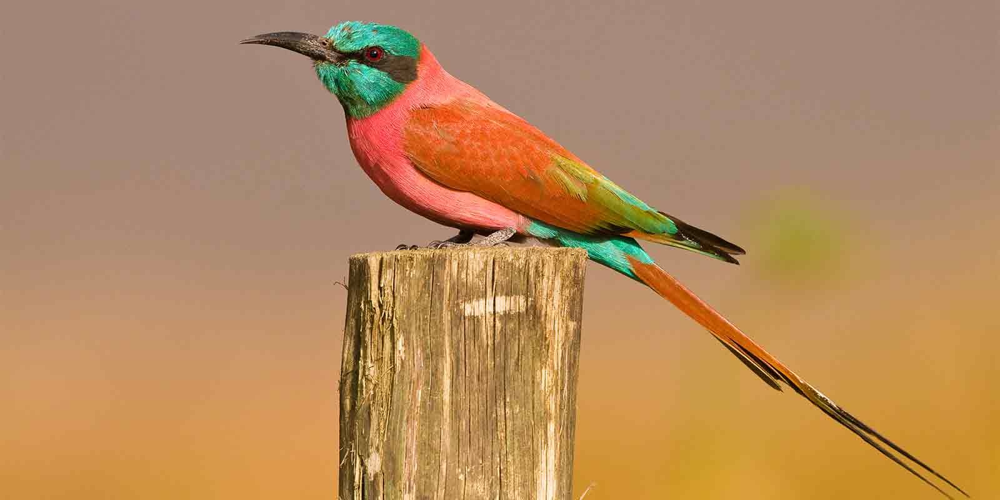

located in the Semen Mountain National Park is one of the tallest waterfalls in africa,
Ethiopia A Truly
breathtaking sight to behold and plunging 500 meters below the viewing point.
discover the magical scenery of the Semen Mountain help us to collect the momments for
more
information visit to website

Gambella National Park located about 600 kilometre from Addis Ababa
on the Baro River. Gambella has a strange
history.from 1902 until
it was captured by the italian in second world war.

Bale National Park are perhaps the weirdest rodents on the earth,
with an enormous heads, big goofy teeth,
along bendy body,
and legs as short as asausage dogs.
some 220 live around bale is bleak yet beautiful sanetti plateau
in the southern Ethiopia, a six hours drive southern from
Addis Ababa.

Awash National Park is home to a diverse range of plains wildlife
and offers tremendous birdwatching oppotunities
, with over 400 species recoded
Address: North Gonder Debark, 1248,Ethiopia
contact: +251913034822
Email: Siemenmountain@gmail.com
Area:220km2,
Visitors:26,000(in 2016)